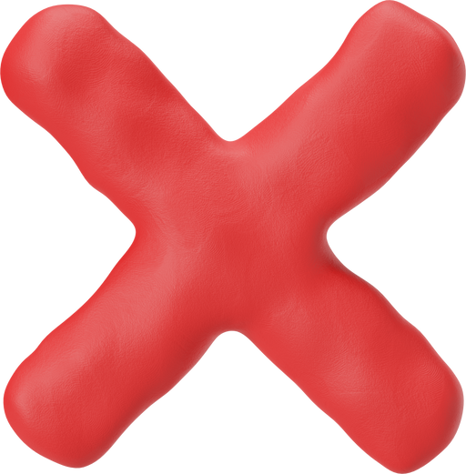
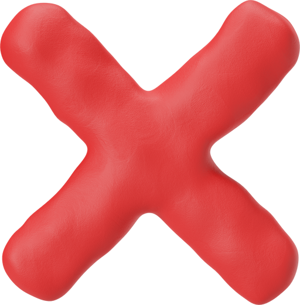

MAPPING AND SURVEY
Our startup is focused on providing mapping and survey solutions using drones. Drones are revolutionizing the way we collect and analyze data. With their ability to capture high-resolution images and videos, they have become an important tool for surveyors, engineers, and construction professionals. Our team of experts uses advanced software and technology to process data collected by drones to generate accurate maps, 3D models, and topographic surveys. One of the biggest advantages of using drones for mapping and surveying is the speed at which data can be collected. Drones can cover large areas in a short amount of time, reducing the time and cost required for traditional surveying methods. Additionally, drones can fly over inaccessible or hazardous areas, providing valuable data without putting human lives at risk. At our startup, we are committed to providing customized solutions to our clients. Whether it's for land surveys, construction site mapping, or infrastructure inspections, we analyze the specific needs of each project to provide the most efficient and accurate solution.